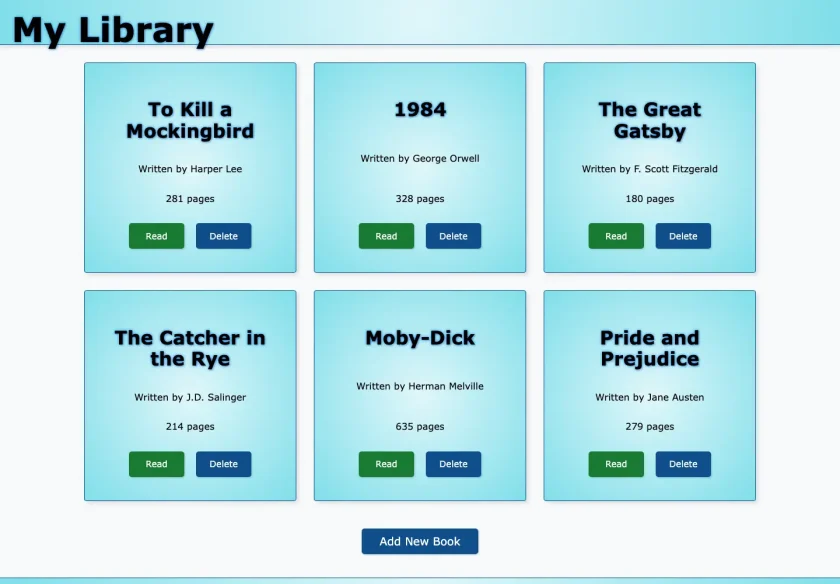

Semantic structure
Landmarks, articles, logical headings, labeled controls, and named dialogs create a clear interaction model.
Vanilla JavaScript project
A simple, persistent home for a personal reading list.
A focused browser-based collection manager built with semantic HTML, responsive CSS, and vanilla JavaScript. Readers can add books, update reading status, and maintain a personal collection without creating an account.

The experience
The interface centers on four useful collection-management actions. Each interaction is designed to be immediately understandable, with clear status, focused dialogs, and no unnecessary setup.
Focused interaction
The add-book flow gathers only what the card needs, then returns the reader directly to the updated library.
Application quality
The implementation stays straightforward while accounting for semantics, keyboard behavior, focus management, validation, and resilient state.
Landmarks, articles, logical headings, labeled controls, and named dialogs create a clear interaction model.
Visible focus, deliberate focus movement, Escape-to-close behavior, and announcements support non-pointer use.
Versioned local storage preserves valid collections and fails safely when saved data is unavailable.
Centralized event handling, stable identifiers, and predictable dialog state keep the JavaScript compact.
Technology
A deliberately lean browser application with no framework, account system, or server dependency.
Explore the finished project
Add a title, update its reading status, and see how the focused interface adapts across screen sizes.